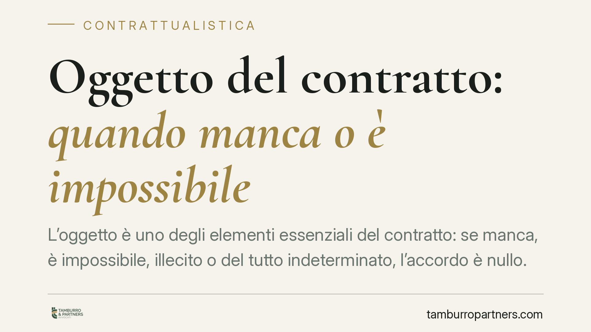

Oggetto del contratto: quando manca o è impossibile
L'oggetto è uno degli elementi essenziali del contratto: se manca, è impossibile, illecito o del tutto indeterminato, l'accordo è nullo. Comprendere i requisiti fissati dal codice civile e le conseguenze della loro assenza è decisivo per chi negozia o redige contratti, perché incide sulla validità stessa del vincolo assunto.

Il fatto in breve
L'oggetto del contratto è ciò su cui le parti si accordano: la prestazione dovuta, il bene trasferito, il servizio promesso. Il codice civile lo colloca tra gli elementi essenziali dell'accordo. Quando è carente o viziato, il contratto non produce effetti. La giurisprudenza della Cassazione ha più volte precisato i confini di questi vizi, distinguendo tra oggetto assente, impossibile, illecito o indeterminato.
Inquadramento normativo
L'art. 1325 c.c. elenca i requisiti del contratto e include l'oggetto tra gli elementi essenziali: senza di esso l'accordo non esiste come atto valido.
L'art. 1346 c.c. stabilisce i quattro requisiti che l'oggetto deve possedere: deve essere possibile, lecito, determinato o quantomeno determinabile. Sono requisiti cumulativi: la mancanza di uno solo compromette la validità dell'accordo.
La determinabilità merita attenzione. L'oggetto non deve essere per forza già fissato nel dettaglio al momento della stipula, purché le parti abbiano indicato criteri sufficienti per individuarlo in seguito. In questa logica l'art. 1349 c.c. consente di affidare la determinazione dell'oggetto a un terzo, l'arbitratore (soggetto incaricato dalle parti di completare il contenuto del contratto). Se le parti non chiariscono i criteri, l'arbitratore deve procedere con equo apprezzamento; se manca l'accordo o l'arbitratore non provvede, decide il giudice.
L'art. 1348 c.c. ammette poi che l'oggetto riguardi cose future: si può validamente contrattare su un bene non ancora esistente, salvo i casi vietati dalla legge.
Sul piano delle conseguenze interviene l'art. 1418 c.c.: la mancanza di uno dei requisiti indicati dall'art. 1346 determina la nullità del contratto. La nullità è la forma più grave di invalidità: il contratto è improduttivo di effetti fin dall'origine, può essere fatta valere da chiunque vi abbia interesse ed è rilevabile d'ufficio dal giudice, senza limiti di tempo.
Le quattro patologie dell'oggetto
Impossibilità. Si distingue tra impossibilità originaria (esistente già al momento della stipula) e sopravvenuta (successiva). Solo la prima incide sulla validità: se al momento dell'accordo la prestazione è materialmente o giuridicamente irrealizzabile, il contratto è nullo. L'impossibilità sopravvenuta, invece, opera sul piano dell'esecuzione e apre altri rimedi, come la risoluzione.
Illiceità. L'oggetto è illecito quando contrasta con norme imperative, ordine pubblico o buon costume. Anche qui la sanzione è la nullità.
Indeterminatezza. Se l'oggetto non è né determinato né determinabile, perché mancano i criteri per individuarlo, il vincolo non regge.
Mancanza. L'assenza totale dell'oggetto rende il contratto privo di un elemento essenziale, quindi nullo ai sensi combinati degli artt. 1325 e 1418 c.c.
Implicazioni pratiche
Per chi negozia, il rischio concreto è stipulare un accordo che sembra valido ma che poi si rivela improduttivo di effetti. La nullità non si sana con il tempo e non richiede l'iniziativa della sola parte interessata: può emergere in giudizio anche a distanza di anni, travolgendo l'intera operazione economica.
Particolare cautela va riservata alle clausole che rinviano a una determinazione futura. Affidarsi genericamente a un terzo senza indicare criteri, oppure descrivere la prestazione in modo vago, espone il contratto a contestazioni sulla determinabilità dell'oggetto.
Cosa fare in concreto
- Verificare l'esistenza e la fattibilità della prestazione al momento della stipula: accertare che l'oggetto non sia già impossibile all'origine.
- Descrivere l'oggetto con precisione, indicando bene, quantità, qualità e modalità della prestazione; evitare formule generiche.
- Inserire criteri di determinabilità chiari quando l'oggetto non è ancora definito, specificando parametri oggettivi o il meccanismo di calcolo.
- Disciplinare il ricorso all'arbitratore ex art. 1349 c.c. definendo con esattezza il suo incarico e i limiti della sua valutazione.
- Controllare la liceità dell'oggetto rispetto a norme imperative e vincoli di legge prima della firma.
---
Contributo informativo a cura di Tamburro & Partners - Avv. Giuseppe Tamburro. Non costituisce parere legale.
Ogni contratto ha il suo equilibrio.
Se vuoi una revisione delle clausole o una redazione su misura, scrivi allo studio. Ti rispondiamo entro un giorno lavorativo.